of the systems from 1400 to 1799 whose kind is determined are nomenclators: an alphabet with a list of names and words.
in invented signs, fifteenth century against eighteenth, of the systems whose signs are recorded.
distinct signs in the median key, 1400–49 (17 systems) against 1750–99 (40).
codes that are not nomenclators, before 1750 against 1800–49, of the systems whose kind is determined.
01The nomenclator holds for four centuries
From the first half-century counted to the end of the eighteenth, the nomenclator is never under 60% of the systems whose kind is determined. Systems typed as codes and not as nomenclators are 5% before 1750, 27% in 1750–99 and 43% in 1800–49.
Kinds of system: share of each half-century's systems
systems counted
Every row is on the same scale, so a bar twice as tall is twice the share. The gold bar is the kind's peak. A system that combines kinds is counted once, under the first it matches in this order: polyalphabetic, transposition or polygraphic; nomenclator; code; homophonic; simple. A system with a word list beside its alphabet is a nomenclator even when the profile also calls it a code. Paler bars rest on fewer than 25 systems.
Polyalphabetic, transposition and polygraphic systems are 2% before 1750 and 29% from 1850 on. Simple substitution is 6% of the systems before 1800 and 16% after, with none in 1450–99.
02Invented signs give way to figures
Ciphers written in figures alone are 0% of the fifteenth-century systems, 12% of the sixteenth, 49% of the seventeenth and 79% of the eighteenth. From 1850 letters are 52% of the systems; of those 63 systems, 28 are polyalphabetic, transposition or polygraphic and 21 are codes.
What the ciphertext is written in, share by half-century
- Invented signs
- Digits with letters or signs
- Digits only
- Letters
Share of the systems whose sign inventory is recorded.
03The change falls in different decades for each power
The same squares, one lane per power. The move from invented signs to figures is not one date: read along a lane to see when the gold ends for that power in what the project holds.
The systems of each power, by year
- Invented signs
- Digits with letters or signs
- Digits only
- Letters
- Not recorded
The power is the country the profile gives for most of a target's documents. It is usually the owner of the cipher, but not always: an envoy's letters can be filed under the court he wrote from, and a few lanes hold private manuscripts. The dates are those of the systems counted here, not of first or last use anywhere.
First and last cases by power
| Power | Systems | Years | First digits-only cipher | Last cipher in invented signs | First code | Largest key |
|---|---|---|---|---|---|---|
| France | 142 | 1526–1870 | 1553 santacroce1552 | 1759 orvilliers1759 | 1559 throck1559margin | 1,047 affry1757, 1757 |
| Spain | 65 | 1473–1866 | 1565 toledo1565 | 1604 sirtori1604 | 1495 puebla1495 | 1,036 chauran1662, 1662 |
| England and Britain | 67 | 1490–1939 | 1585 wotton1585 | 1700 stubbs1700 | 1559 burghley1559 | 1,456 yard1699, 1699 |
| Italian states | 103 | 1413–1816 | 1546 capilupi1546 | 1631 sabran1633 | 1816 castelcicala1816 | 1,315 castelcicala1816, 1816 |
| Papacy | 25 | 1400–1848 | 1542 farnese1541 | 1637 vizani1637 | – | 399 nunzio1718, 1718 |
| German lands and the Empire | 112 | 1426–1945 | 1565 biglia1565 | 1917 visser1917 | 1623 pawel1624 | 863 ilten1743, 1743 |
| Netherlands | 29 | 1535–1809 | 1628 rusdorff1628 | 1594 casimir1618 | 1793 vanreede1793 | 1,849 R1942, 1803 |
| United States | 51 | 1779–1944 | 1780 pcc1780 | 1944 ccr1944 | 1780 pcc1780 | 1,600 king1797, 1797 |
Read these as pointers into the collection, with the same caution about the country label: several of the cases named are filed under a country that did not own the cipher, and some are unread or of undetermined kind.
04Devices that come and go
Of the systems where the profile says either way, 85% have homophones from 1400 to 1649 and 34% from 1800 on. Nulls go the same way (71% and 14%).
Homophones
more than one sign for a letter
95%at its height, 1400–49
recorded for 609 of 817 systems
Nulls
signs that mean nothing
90%at its height, 1450–99
recorded for 450 of 817 systems
Syllable signs
signs for syllables, in the alphabet or the list; a lower bound
47%at its height, 1750–99
recorded for 713 of 817 systems
Marks on the signs
dots, strokes or bars that change a sign’s value
69%at its height, 1450–99
recorded for 628 of 817 systems
Disordered key
values in no alphabetical order; a partly alphabetical key counts as ordered
75%at its height, 1400–49
recorded for 393 of 817 systems
Word breaks kept
the gaps between words survive, wholly or in part; a separator sign does not count
79%at its height, 1850–99
recorded for 585 of 817 systems
Each panel is the share of systems that have the device, among those where the profile records it either way; the figure at the right is the latest half-century with at least 5 such systems. A hollow point rests on fewer than 5. Syllable signs are the exception: a system counts as without them whenever its kind is determined and the profile lists none, so that share is a lower bound. For the disordered key, keyword-derived keys and systems with no sign table are left out.
Marks that change a sign's value are 37% of the systems from 1500 to 1699 against 15% after. The disordered key is 46% before 1700 and 43% from 1700; it is recorded for fewer systems than the other devices.
05Keys grow with the eighteenth century
The median key has 42 distinct signs in 1400–49 and 72 in 1650–99. It reaches 162 in 1700–49 and 274 in 1750–99, with the nomenclators in figures.
Distinct signs or groups per system: median, and the middle half
Counted in the key where it survives, otherwise from the ciphertext, where it is a lower bound: a short letter uses a small part of a large key. Logarithmic scale. From 1850 the profile often records the alphabet a code is spelled in (26 letters), not its number of groups, so the low medians there are not a return to small keys.
06Examples by period
1400 to 1499 34 from the Italian states
55 systems · 84% nomenclator (of the 45 whose kind is determined) · 86% in invented signs (of 49 recorded)
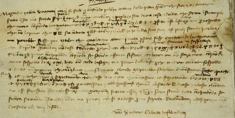
Galeotto Fibindacci da Ricasoli to the Signoria of…
Homophonic substitution on invented signs with nulls and a small nomenclator of names and words, used inline in clear Italian, plus clear cover-words.
Write-up →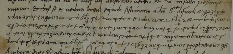
Siena no. 11: Donato Acciaiuoli to Lorenzo de' Medici,…
Homophonic substitution: three to five signs for each vowel, one to three for the consonants, a few nulls, and the numerals 80 and 7 written as dotted numbers; no nomenclator (George Lasry's key, 57 distinct signs).
Write-up →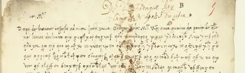
Federico III of Naples to the Catholic Monarchs, San…
The cipher issued to Joan Ram Escrivà, Spanish ambassador at Naples (Escrivà no. 1; Parisi 2004 app. II): a sign alphabet with a nomenclator of letter groups with initials p, q, r, s, t, v, x (qav de, vee que, xer/xoq Vuestras Altezas ...).
Write-up →Images: 1425 Archivio di Stato di Firenze, Dieci di Balía, Responsive 2 no. 171, via DECODE R3754. 1478 Archivio di Stato di Siena, Concistoro 2308 fasc. 2 no. 11 p. 2, via DECODE R4800. 1497 Bibliothèque nationale de France, Espagnol 318 f. 5r, via Gallica (btv1b52503046q).
1500 to 1649 98 from France
381 systems · 79% nomenclator (of the 335 whose kind is determined) · 43% in invented signs (of 334 recorded)
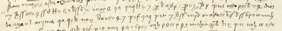
The viceroy of Sicily to Ferdinand, Messina, 27 Apr 1503
A homophonic alphabet of invented signs (39 sign classes for 21 letters) interleaved with nomenclator groups of two to four Latin letters (113 distinct, initials mostly m-, q-, n-, r-, p-), mixed with clear Spanish.
Write-up →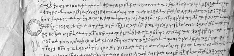
Giuliano Caprile (Buda, Esztergom) to Ferrara, 1520-1521
Homophonic substitution of about 49 invented signs for Italian letters, no word division, crossed ligatures for s and q.
Write-up →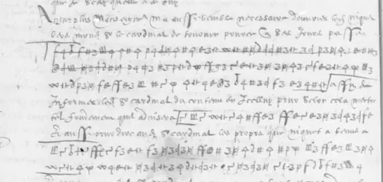
La Guiche (Rome) to Montmorency, 22 Nov 1551
La Guiche: a simple substitution of 22 invented signs for the 22-letter alphabet, no word division.
Write-up →Images: 1503 Bibliothèque nationale de France, Espagnol 318 f. 120v, via Gallica. 1520 Archivio di Stato di Modena, Ambasciatori, Ungheria b. 4, Caprili 1520–21 no. 13, via DECODE R1139. 1551 Bibliothèque nationale de France, fr. 3138 f. 60v, via Gallica btv1b90601662 view 65.
1650 to 1799 41 from the German lands and the Empire and 41 from France
219 systems · 70% nomenclator (of the 192 whose kind is determined) · 72% in digits only (of 206 recorded)
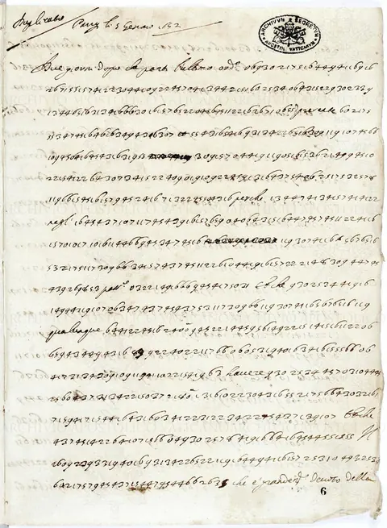
Niccolò Guidi di Bagno to the Secretariat of State,…
Mixed-width numerical homophonic/syllabic cipher with a partly alphabetical four-digit nomenclator.
Write-up →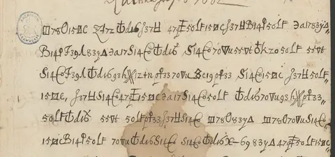
Sanguszko archive 1662 (catalogue 443)
Simple substitution in which each letter is written as a composite group of three or four strokes (23 group shapes)
Write-up →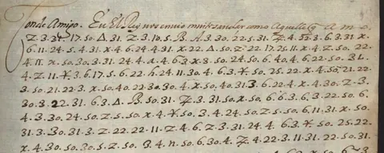
Afonso VI to the Count of Vila Flor, four cipher letters…
Simple substitution with a few homophones on Portuguese; digits and letter-like signs; three states of the key.
Write-up →Images: 1652 Archivio Apostolico Vaticano, Segreteria di Stato, Francia 104 f. 6r, via DECODE R5622. 1662 Archiwum Narodowe w Krakowie, Archiwum Sanguszków teka 134/8, front, via DECODE R7513. 1663 Arquivo Nacional Torre do Tombo, Luís de Miranda Pereira liv. 2 (PT/TT/LMP/0002), image m0037, via DigitArq.
1800 to 1949 40 from the United States
162 systems · 38% code (of the 141 whose kind is determined) · 44% in digits only (of 159 recorded)
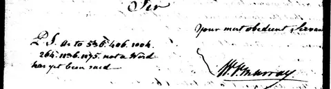
William Vans Murray to James Madison, Paris, 26 June 1801
Murray's numbered legation code of 1797-1801 (about 1-1600 groups for words and syllables, groups joined by dots; the = 536).
Write-up →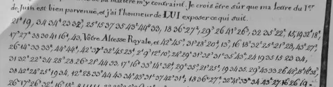
Wolff (The Hague) to Wilhelmina of Prussia, Princess of…
Numbers 1-45 with superscript index 1-4: row N lists four consecutive values of one running sequence of fractions, digits and letters; the index picks one. Up to four homophones per letter.
Write-up →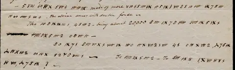
Aaron Burr to Joseph Alston, New York, [c. 20 July] 1804
Simple substitution, one sign per letter: figures 0-8 and 10 for a-l, hatched stroke groups numbered II-X for m-u, three odd signs for v, w, y; words divided, clear words between.
Write-up →Images: 1801 National Archives and Records Administration, RG 59, Despatches from US Ministers to the Netherlands, vol. 4, microfilm M42 reel 5, frame 0398 (left page), via catalog.archives.gov NAID 188770447. 1801 Koninklijk Huisarchief, The Hague, Wilhelmina Prinses van Pruisen (A32) inv. 192, first page (image P2), via DECODE R2232. 1804 Gilder Lehrman Institute of American History, GLC01523, the clear page, via the Hamilton Education Program.
07What is counted
The unit is a cipher system: one key, or one code, as recorded in a target's profile.json. Targets that the key web joins to the same key count once, at the earliest dated document. That gives 887 systems from 920 targets (14 more profiles are not ciphers and are left out); 817 are dated between 1400 and 1949 (16 fall outside those years and 54 have no year). For 104 of the 817 the kind of system is not determined (35 of them not solved); they are left out of the first chart and stay in the others where the field in question is known.
This is a count of what the project has worked on, not a sample of what chanceries produced. It leans towards France, the German lands and the Empire and the Italian states, towards 1500 to 1650, and towards collections that are digitised. A key that survives without a letter, and a letter nobody has photographed, are both missing.
The key web holds 232 keys rebuilt here, 230 recovered by other scholars, 81 DECODE key records, 54 contemporary keys and 42 archive keys. Its entries carry a year and a description in prose, not the fixed fields used above, so this page counts from the profiles; keys in the web that no target uses yet are not counted.
The numbers behind every chart
| Period | Systems | Simple substitution | Homophonic alphabet | Nomenclator | Code | Polyalphabetic, transposition, polygraphic | Digits only | Homophones | Nulls | Syllable signs | Marks on the signs | Disordered key | Word breaks kept | Median size | Median list |
|---|---|---|---|---|---|---|---|---|---|---|---|---|---|---|---|
| 1400–49 | 28 | 5% | 14% | 82% | 0% | 0% | 0% | 95% | 83% | 18% | 20% | 75% | 16% | 42 /17 | 4 /9 |
| 1450–99 | 27 | 0% | 4% | 87% | 9% | 0% | 0% | 94% | 90% | 13% | 69% | 71% | 44% | 56 /12 | 10 /5 |
| 1500–49 | 106 | 4% | 14% | 80% | 1% | 1% | 5% | 87% | 83% | 27% | 46% | 56% | 36% | 49 /54 | 6 /27 |
| 1550–99 | 157 | 4% | 9% | 84% | 4% | 0% | 17% | 85% | 76% | 19% | 46% | 41% | 33% | 47 /95 | 14 /29 |
| 1600–49 | 118 | 11% | 10% | 70% | 5% | 4% | 45% | 80% | 47% | 22% | 28% | 47% | 42% | 59.5 /82 | 15 /29 |
| 1650–99 | 72 | 10% | 12% | 67% | 5% | 5% | 56% | 75% | 35% | 38% | 27% | 30% | 41% | 71.5 /56 | 36.5 /16 |
| 1700–49 | 72 | 5% | 0% | 84% | 11% | 0% | 82% | 87% | 58% | 45% | 21% | 42% | 38% | 162 /42 | 127.5 /14 |
| 1750–99 | 75 | 3% | 3% | 60% | 27% | 7% | 76% | 76% | 70% | 47% | 23% | 52% | 28% | 274 /40 | 732 /6 |
| 1800–49 | 39 | 11% | 8% | 30% | 43% | 8% | 71% | 67% | 31% | 41% | 18% | 38% | 42% | 64 /29 | 1,592 /3 |
| 1850–99 | 25 | 14% | 9% | 18% | 18% | 41% | 29% | 37% | 31% | 5% | 14% | 50% | 79% | 28 /14 | 175 /4 |
| 1900–49 | 98 | 18% | 9% | 6% | 41% | 26% | 37% | 20% | 5% | 7% | 5% | 35% | 26% | 26 /71 | 24 /7 |
Shares are of the systems where the field is recorded; hover a cell for the count. Shares on fewer than 5 systems are greyed. Median size is in distinct signs or groups and median list is the number of nomenclator or code entries, each with the number of systems that record it. The commentary on this page states what the counts show and is not set against the literature on the nomenclator and the code.